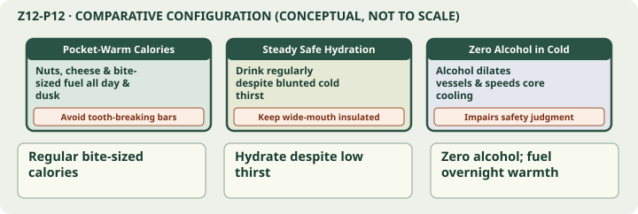

Z12-P12 · Extreme environments · New manuscript
Plan winter camp nutrition, hydration and overnight heat budgets
Sustain metabolic warmth through high-calorie fueling and warm safe hydration across subfreezing nights.
When it applies · Winter camping, cold-weather travel and prolonged cold-weather emergencies.
Equipment · Easy-to-eat no-freeze snacks, safe treated water in insulated bottles and full cold-rated sleep system.

Actions
- Eat regular small high-calorie snacks throughout the day and a warm or calorie-rich meal before sleeping—the human body requires steady caloric fuel to generate internal heat overnight.[E05, E10, ED]
- Avoid solid freeze-hard candy bars that break teeth at 0°F by carrying bite-sized nuts, cheese, dried fruit or pocket-warmed snacks, and drink safe treated water steadily even though cold air blunts thirst cues.[W09, E10, ED]
- Avoid alcohol in cold exposure—alcohol dilates peripheral blood vessels, creating a false warm flush while accelerating core heat loss and impairing critical judgment.[E06, T03, ED]
Failure recognition · Skipping dinner and water because it feels too cold to cook outside, then shivering awake all night with depleted energy and dehydration.[E05, E06, W09]
Verify · Confirm pocket-warmed accessible calories, steady daytime safe hydration, zero alcohol in cold camps and dry layered sleep setup.[E05, W09, ED]
Stop or change course · Inability to eat/drink safely, confusion or persistent uncontrollable shivering despite fuel and dry shelter requires medical hypothermia escalation.[T03, E06, T02]
Evidence and editorial notes
- E05 · NWS · What To Do If You're Caught in a Winter Storm (current web edition)
- Section: Outside and find shelter · Conditions: Cold, wet or windy winter conditions
Support: Block wind, stay dry and keep off cold ground. Keep exposure reduction separate from making a fire.
Limitations: Improvised windbreaks do not provide rated thermal protection or snow-load capacity. · Conflicting evidence: None; aligns with CDC-H.
Editorial note: Separates wind, ground, and moisture heat-loss pathways. · Specialist reviewer: Cold-weather shelter specialist
Primary source · checked 2026-11-24 - E06 · CDC · Preventing Hypothermia (current web edition)
- Section: Recognizing and treating hypothermia · Conditions: Cold wet exposure; signs such as confusion, slurred speech, fumbling or drowsiness
Support: Suspected hypothermia warrants prompt help and protection from further cooling. It can occur above freezing if wet or chilled.
Limitations: Early mild shivering can mask rapidly worsening judgment impairment. · Conflicting evidence: None; aligns with ARC and WMS guidance.
Editorial note: Anchors exposure-to-medical escalation thresholds. · Specialist reviewer: Wilderness medicine
Primary source · checked 2026-11-24 - E10 · NWS · What To Do If You're Caught in a Winter Storm (current web edition)
- Section: Outside > Protect yourself from frostbite and hypothermia · Conditions: Outdoor winter storm
Support: Keep clothing dry and avoid overexertion. Wetness accelerates cooling.
Limitations: Cotton retains moisture and accelerates conductive and evaporative heat loss. · Conflicting evidence: None; reinforces moisture-management layering.
Editorial note: Links sweat management to overnight insulation integrity. · Specialist reviewer: Cold-weather shelter and wilderness medicine
Primary source · checked 2026-11-24 - T02 · American Red Cross · First Aid Steps (current web edition)
- Section: First Aid Steps > Call 9-1-1 · Conditions: Lay emergency response to unresponsiveness, abnormal breathing or severe bleeding
Support: Activate EMS and get needed equipment. Follow dispatcher directions and act within training.
Limitations: Remote locations may delay EMS arrival, requiring sustained stabilization after activation. · Conflicting evidence: None; aligns with NPS-E.
Editorial note: Mandates early emergency activation and dispatcher adherence. · Specialist reviewer: EMS and wilderness medicine
Primary source · checked 2026-11-24 - T03 · CDC · Preventing Hypothermia (current web edition)
- Section: Warning signs; What to do · Conditions: Cold exposure and suspected hypothermia
Support: Confusion, slurred speech and drowsiness are warning signs. Obtain medical attention and protect from further cold.
Limitations: Shivering may stop as hypothermia worsens; absence of shivering is not reassurance. · Conflicting evidence: None; aligns with WMS cold guidelines.
Editorial note: Core neurological red-flag trigger for stopping activity and calling rescue. · Specialist reviewer: Wilderness medicine
Primary source · checked 2026-11-24 - W09 · CDC · Water Treatment Options When Hiking, Camping, or Traveling (current web edition)
- Section: Overview and water treatment methods · Conditions: Hiking or camping where no safe source is confirmed
Support: Even clear water can contain germs. Assess the supply and carry safe water or an appropriate treatment method.
Limitations: Visual clarity never detects microbes or dissolved chemical contaminants. · Conflicting evidence: None across CDC/NPS/EPA sources.
Editorial note: Reinforces clarity-is-not-potability invariant across all Z04 cards. · Specialist reviewer: Drinking-water safety and public health
Primary source · checked 2026-11-24
Source lineage · NWS winter safety and CDC hypothermia; new manuscript · Classification · New manuscript.